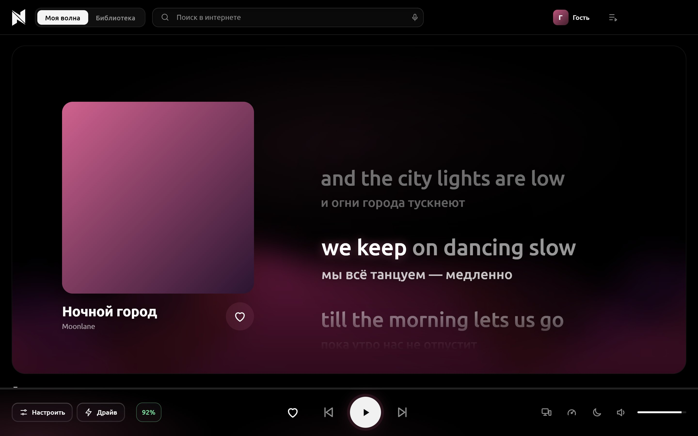
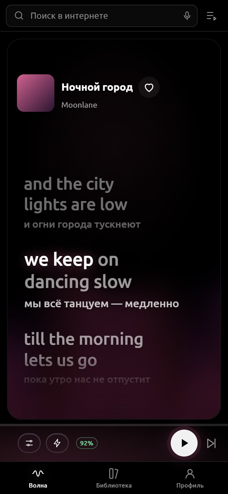

Ничего лишнего.
Две вкладки — «Моя волна» и «Библиотека», поиск и плеер внизу. Всё остальное появляется, когда нужно. Разобраться — дело секунды.


- Две вкладкиВолна и библиотека — больше ничего искать не нужно
- Живой экранОбложка, текст и сияние в цвет трека
- Плеер всегда под рукойОдна строка внизу — и на компьютере, и на телефоне
Бесконечно.
И точно в цель.
Поток, который не заканчивается и не промахивается. NAI оценивает каждый трек до того, как он зазвучит.
Каждое слово —
в такт.
Строка загорается вслед за голосом, слово за словом. Протяжное слово заливается плавно — ровно столько, сколько его тянут. Перевод — тут же, под строкой.
Знает
заранее.
Ещё до первой ноты NAI знает, насколько трек ваш, кто и когда в нём поёт, где припев и где самое сильное место.
- Процент — насколько трек вам понравится
- Цвет гребня — кто поёт: девушка, парень или вместе
- Припев и самое яркое — в одно касание
- Спокойное вступление? Сразу к интересному
Ни секунды
тишины.
Драйв подбирает следующий трек и сводит его с текущим точно в такт. Один голос замолкает — вступает следующий. Музыка не прерывается ни на миг.
- Переход точно по долям — без сбоя ритма
- Голоса не наслаиваются: один передаёт слово другому
- Бесконечно — пока вы слушаете
Голос —
отдельно.
Нейросеть разделяет любой трек на голос и музыку. Караоке, чистый минус или только вокал — в одно касание.
Быстрее. Медленнее.
Тот же голос.
Любой трек — в sped up или slowed. Темп меняется, тональность остаётся на месте.
Одна музыка.
Все устройства.
Компьютер и телефон — одно целое. Музыка играет на одном, управляете — с любого.
- Телефон — пульт: пауза, перемотка, громкость, очередь
- «Слушать здесь» — продолжить с того же места
- «Включить там» — отправить музыку на другое устройство
- Клавиши мультимедиа и экран блокировки